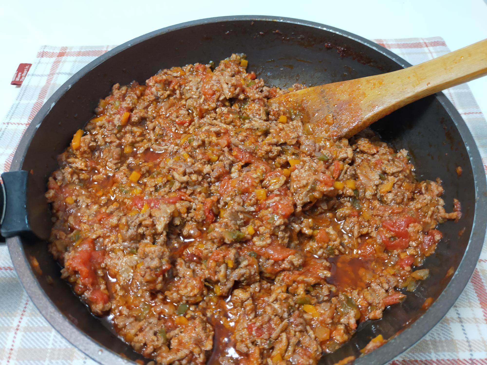

ミートソース
材料・金額
| 材料 | 購入金額 | 使用量 | 金額 | kcal |
|---|---|---|---|---|
| 炒め野菜ベース | ||||
| にんじん3本 | 160 | 1本160g | 53 | 59 |
| 玉ねぎ1袋（3個入） | 213 | 1個280g | 71 | 104 |
| ピーマン1袋（10個入） | 214 | 5個200g | 107 | 38 |
| 塩 | - | 小1 | - | - |
| 油 | - | 大4 | - | 480 |
| 小計 | - | - | 231 | 681 |
| 小計×0.75 | - | - | 173 | 511 |
| 豚ひき肉300g | 470 | 50g | 78 | 111 |
| 合挽肉950g | 1,115 | 650g | 763 | 1,684 |
| 油 | - | △大4 | - | △480 |
| トマト缶6缶 | 647 | 2缶 | 216 | 160 |
| 赤ワイン1本 | 533 | 250cc | 178 | 183 |
| ローリエ | - | 1枚 | - | - |
| クレイジーソルト | - | 小1/2 | - | - |
| 合計（1,200g） | - | - | 1,408 | 2,169 |
| 1食×2人分 | - | 300g | 352 | 542 |
作り方
- フライパンにひき肉を出し、中火にかける
- しばらく放っておき、焼き目がついたら裏返す
- フライパンをもう1枚用意し、2.の間に、にんじん・玉ねぎ・ピーマンをみじん切りにし、入れておく
- 2.のひき肉からでた油（大4）を3.のフライパンに入れ、塩小1も加え、中火で茶色っぽくなるまで炒める
- 4.で炒めている間、ひき肉両面に軽く焦げ目がついたら、ひき肉のフライパンに赤ワインをジャーっといれる
- 5.は赤ワインの水分が飛び、油がにじむくらいまでフタをせず炒め煮する
- 4.の野菜炒めペーストの3/4量を、6.のフライパンに入れる（1/4量は後日、別の料理に使います）
- 7.に、トマト缶とローリエを入れ、入れた後のトマト缶に水150cc入れ、トマト缶をゆすぎ（1缶目→2缶目の順でゆすぐ）、フライパンに入れる
- 水分が減って、油が浮いてくるくらいまでフタをせず煮込んだら、クレイジーソルトで味を整えてできあがり
振り返り
炒め野菜ペーストを作るときに、油を入れないと焦げてしまうのですが、ひき肉からとんでもなく油が出るので、流用しています。意識して、油を減らそうと思っているわけではないのですが、油でカロリーをたくさんとるのは勿体ないなぁと思ってしまいます。そのカロリー分、炭水化物が食べたい（←痩せない）。
合挽肉に豚ひき肉を混ぜているのは、割合にこだわりが…とかそういうわけではありません。スーパーで購入時、たまたまそういう分け方のパッキングで、ミートソースにひき肉を700g使いたくて、明日のために合挽肉を300g残しておきたかったので、こうなりました。
日曜日に炒め野菜ペーストを作って、ミートソースを作ると、その週の献立は大体決定します。ミートソースはアレンジしていくので、味は薄めです。粗熱が取れたら、4等分してジップロックに入れておきます。数日以内に使う分は冷蔵庫、それ以外は冷凍庫で保管します。冷凍庫のものを使う場合は、前日から冷蔵庫に移して解凍しておくと便利です。